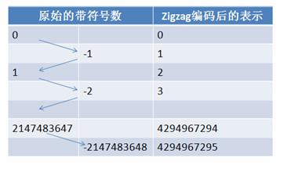

本文是对官方文档的翻译，然后截取了一篇非常优秀的文章片段来帮助理解，本人英文水平有限，基本都是直译，如果有不理解的地方请参考英文官方文档，参考的文章链接在文章末尾
protocal buffers简介
protocol buffer是google的一个开源项目,它是用于结构化数据串行化的灵活、高效、自动的方法，例如XML，不过它比xml更小、更快、也更简单。你可以定义自己的数据结构，然后使用代码生成器生成的代码来读写这个数据结构。你甚至可以在无需重新部署程序的情况下更新数据结构
protocal buffers是如何工作的
在.proto文件定义消息，message是.proto文件最小的逻辑单元，由一系列name-value键值对构成。下面的.proto文件定义了一个”人”的消息：
1 | message Person { |
message消息包含一个或多个编号唯一的字段，每个字段由字段限制,字段类型,字段名和编号四部分组成，字段限制分为：optional(可选的)、required(必须的)以及repeated(重复的)。定义好消息后，使用ProtoBuf编译器生成C++对应的.h和.cc文件，源文件提供了message消息的序列化和反序列化等方法：
1 | # 序列化数据 |
为什么不直接使用XML
同XML相比，Protobuf的优势在于高性能，它以高效的二进制存储方式比XML小3到10倍，快20到100倍，原因在于：
- ProtoBuf序列化后所生成的二进制消息非常紧凑
- ProtoBuf封解包过程非常简单
Protobuf序列化
Varint简介
Varint 是一种紧凑的表示数字的方法。它用一个或多个字节来表示一个数字，值越小的数字使用越少的字节数。这能减少用来表示数字的字节数。
比如对于int32类型的数字，一般需要4个byte来表示，但是采用Varint对于很小的int32类型的数字，则可以用1个byte来表示。当然凡事都有好的也有不好的一面，采用Varint表示法，大的数字则需要5个byte来表示。从统计的角度来说，一般不会所有的消息中的数字都是大数，因此大多数情况下，采用Varint后可以用更少的字节数来表示数字信息。
Varint格式
Varint中的每个byte的最高位bit有特殊的含义，如果该位为1，表示后续的byte也是该数字的一部分，如果该位为0则结束，其他的7个bit都用来表示数字。因此小于128的数字都可以用一个byte表示，大于128的数字会用两个字节来表示。
Varint编解码
比如数值300用Varint来表示就是：1010 1100 0000 0010。下图演示了Google Protocol Buffer解析Varint表示的300的过程，由于Google Protocol Buffer采用小端字节序，所以实际存储的字节顺序是反过来的：
###Google Protocol Buffer序列化
消息经过序列化后会成为一个二进制数据流，该流中的数据为一系列的Key-Value对。如下图所示：

采用这种Key-Pair结构无需使用分隔符来分割不同的 Field。对于可选的Field，如果消息中不存在该Field，那么在最终的Message Buffer中就没有该Field，这些特性都有助于节约消息本身的大小。Key 用来标识具体的Field，在解包的时候ProtoBuf根据Key就可以知道相应的Value应该对应于消息中的哪一个Field。Key由字段的编号和字段的线性传输类型构成> (field_number << 3) | wire_type
| wire_type | Meaning | UsedFor |
|---|---|---|
| 0 | Varint | int32, int64, uint32, uint64, sint32, sint64, bool, enum |
| 1 | 64-bit | fixed64, sfixed64, double |
| 2 | Length-delimi | string, bytes, embedded messages, packed repeated fields |
| 3 | Start group | Groups (deprecated) |
| 4 | End group | Groups (deprecated) |
| 5 | 32-bit | fixed32, sfixed32, float |
- Google Protocol Buffer采用zigzag编码来用无符号数来表示有符号数字，zigzag采用正数和负数交错的方式来同时表示无符号数来表示有符号数字，如图所示：

使用zigzag编码，绝对值小的数字，无论正负都可以采用较少的byte来表示，充分利用了Varint这种技术。
- 其他的数据类型，比如字符串等则采用类似数据库中的varchar的表示方法，即用一个varint表示长度，然后将其余部分紧跟在这个长度部分之后即可。
ProtoBuf编码与XML编码对比
消息定义如下：
1 | package lm; |
假设有一条
1 | ```08 65 12 06 48 65 6C 6C 6F 77``` |
31 30 31 3C 2F 69 64 3E 3C 6E 61 6D 65 3E 68 65
6C 6C 6F 3C 2F 6E 61 6D 65 3E 3C 2F 68 65 6C 6C
6F 77 6F 72 6C 64 3E
一共 55 个字节，这些奇怪的数字需要稍微解释一下，其含义用 ASCII 表示如下：`
ProtoBuf封装包
首先我们来了解一下XML的封解包过程。XML需要从文件中读取出字符串，再转换为XML文档对象结构模型。之后再从XML文档对象结构模型中读取指定节点的字符串，最后再将这个字符串转换成指定类型的变量，这个过程非常复杂。其中将XML文件转换为文档对象结构模型的过程通常需要完成词法文法分析等大量消耗 CPU 的复杂计算。
反观Protobuf，它只需要简单地将一个二进制序列按照指定的格式读取到C++对应的结构类型中就可以了。从上一节的描述可以看到，消息的解码过程也可以通过几个位移操作组成的表达式计算即可完成，速度非常快。
上面例子中，Protobuf解包helloworld消息的过程可以用下图表示：
整个解析过程需要Protobuf本身的框架代码和由Protobuf编译器生成的代码共同完成。其中Message以及Message_lite作为通用的流程框架，CodedInputStream、WireFormatLite提供了对二进制数据的解码功能，而且Protobuf的解码可以通过几个简单的数学运算完成，无需复杂的词法语法分析，因此图中ReadTag()等方法都非常快。相对于XML的解析，整个调用路径上的其他类和方法都非常简单，这也就是ProtoBuf封解包速度迅速的原因。